대기환경기사 (2001-09-23 기출문제)
1과목: 대기오염 개론
1. 다음은 가우시안(Gaussian) 확산방정식이다. 정상 상태(steady state)를 고려할 경우 “0”이 되는 항은?
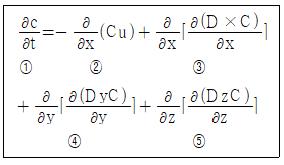
- ①번
- ②번
- ③번
- ④번과 ⑤번
(정답률: 알수없음)

2. '라돈'에 관한 설명으로 틀린 것은?
- 일반적으로 인체의 조혈기능 및 중추신경계통에 영향을 미치는 것으로 알려져 있다.
- 무색, 무취의 기체로 액화되어도 색을 띠지 않는 물질이다.
- 지구상에서 발견된 약 70여가지의 자연 방사능물질이다.
- 주로 건축자재를 통하여 인체에 영향을 미치고 있으며 화학적으로 거의 반응을 일으키지 않는다.
(정답률: 알수없음)
3. 오존(O3)에 대한 설명으로 알맞지 않는 것은?
- 대류권의 오존은 국지적인 광화학스모그로 생성된 옥시단트의 지표물질이다.
- 대류권에서 광화학반응으로 생성된 오존은 대기중에서 소멸되지 않고 축적되어 계속적인 오염을 유발시킨다.
- 오염된 대기 중의 오존은 로스앤젤레스 스모그 사건에서 처음 확인되었다.
- 대류권의 오존 자신은 온실가스로도 작용한다.
(정답률: 30%)
4. 먼지 농도가 40㎍/m3일 때 가시거리는? (단, 상대습도 70%, A=1.2)
- 25km
- 30km
- 35km
- 40km
(정답률: 알수없음)
5. 가로/세로/높이가 10m×5m×4m인 교실에서 분진이 1mg/s 발생되고 있다. 교실 내의 공기의 분진농도가 100㎍/m3이며 풍속 1m/s의 바람이 교실면과 통하고 있다면 정상상태(steady state)에서의 교실내 분진농도는?
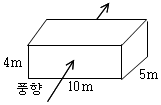
- 125㎍/m3
- 130㎍/m3
- 135㎍/m3
- 145㎍/m3
(정답률: 30%)
6. 섬유강도저하, 염료변색의 원인이 되는 대기오염물질과 가장 거리가 먼 것은?
- NO2
- O3
- HF
- SO2
(정답률: 59%)
7. 다음 중 황화수소의 발생과 가장 관계가 깊은 업종은?
- 석유정제업
- 금속정련업
- 유리공업
- 소다공업
(정답률: 알수없음)
8. Deacon법칙을 이용하여 지표높이 10m에서의 풍속이 4m/s일 때, 상공의 풍속이 12m/s인 경우의 높이는? (단, P=0.28)
- 300m
- 400m
- 500m
- 600m
(정답률: 알수없음)
9. 고속도로상의 교통밀도가 5,000대/hr이고, 차량의 평균속도가 100km/hr이다. 차량 한 대의 탄화수소 방출량이 2×10-2g/secㆍ대 일 때 고속도로에서 방출되는 탄화수소의 양(g/secㆍm)은?
- 0.1
- 0.01
- 0.001
- 0.0001
(정답률: 알수없음)
10. 다음은 질소산화물(NOx)에 대한 설명이다. 틀린 것은?
- NOx는 혈액중의 헤모글로빈과 결합하여 일산화탄소보다 친화력이 수백배 더 강하다.
- 연소과정 중 고온에서는 90%이상이 NO로 발생한다.
- NO2는 적갈색,자극성 기체로 독성이 NO보다 약5배 정도나 더 크다.
- NO 독성은 오존보다 10-15배 강하여 폐렴, 폐수종을 일으킨다.
(정답률: 알수없음)
11. 열섬효과(heat island effect)에 대한 설명중 틀린 것은?
- 교외지역에서는 도시지역에 비하여 고온의 공기층을 형성하게 되는데 이를 열섬(heat island)현상이라 한다.
- 도시지역과 교외지역은 풍속이나 대기안정도의 특성이 서로 다르고, 열섬의 규모와 현상은 시공간적으로 다양하게 나타난다.
- 열섬현상의 요인으로서는 인공열 발생증가, 건물등 구조물에 의한 거칠기변화, 지표면에서의 증발잠열 차이 등이다.
- 도시지역에서의 풍속은 교외지역에 비하여 평균적으로 25-30% 감소하며, 대기오염물질이 응결핵으로 작용하여 운량과 강우량의 증가 현상이 나타난다.
(정답률: 39%)
12. 대기오염물질 중에서 대기중의 체류시간이 긴 순서대로 나열된 것은?
- NO2 ＞ SO2 ＞ CO ＞ CH4
- N2 ＞ CH4 ＞ CO ＞ SO2
- CO ＞ N2 ＞ SO2 ＞ CH4
- SO2 ＞ NO2 ＞ CH4 ＞ CO
(정답률: 알수없음)
13. 대기중에 금속판을 노출시킬 때 가장 중량손실이 큰 금속으로 알맞은 것은?
- 구리
- 알루미늄
- 납
- 아연
(정답률: 0%)
14. 대기오염사건과 그 원인이 되는 물질을 짝지은 것으로 적절치 않는 것은?
- 뮤즈계곡 사건-염소
- 도노라사건-아황산가스, 황산미세먼지
- 포자리카사건-황화수소
- 런던스모그 - 아황산가스와 분진
(정답률: 알수없음)
15. 대기안정도(대기권)에 관한 설명으로 적절치 않은 것은?
- 대기안정도는 연직방향의 온도구배에 따라서 결정되는 것으로 대기확산에 중요한 변수이다.
- 공기가 상승함에 따라 온도가 자연적으로 감소하는 것은 고도가 높아지면서 기압이 감소하여 단열팽창에 의해 온도가 감소하기 때문이다.
- 대기 절대온도가 고도에 따라서 증가하면 불안정한 대기이고, 고도를 따라서 감소하면 안정한 대기이다.
- 건조공기의 단열체감률은 -1℃/100m이고, 국제적으로 약속된 표준체감률은 -0.66℃/100m이다.
(정답률: 50%)
16. 굴뚝에서 배출되어지는 연기의 모양 중 환상형(looping)에 관하여 맞는 것은?
- 전체 대기층이 강한 안정시에 나타나며, 연직확산이 적어 지표면에 순간적 고농도를 나타낸다.
- 전체 대기층이 중립일 경우에 나타나며, 연기모양의 요동이 적은 형태이다.
- 상층이 불안정, 하층이 안정일 경우에 나타나며, 바람이 다소 강하거나 구름이 낀 날 일어난다.
- 전체 대기층이 불안정시에 나타나며, 지표면이 가열되고 바람이 약한 맑은 날 낮에 주로 일어난다.
(정답률: 알수없음)
17. Richardson수에 관한 설명으로 알맞지 않는 것은?
- Richardson수가 큰 음의 값을 가지면 기계적인 난류가 지배적이어서 수직, 수평운동이 일어난다.
- Richardson수가 0에 접근하면 분산은 줄어든다.
- Richardson수는 무차원수로서 근본적으로 대류난류를 기계적인 난류로 전환시키는 율을 측정한 것이다.
- Richardson수를 산정하기 위한 인자는 그 지역의 중력가속도, 잠재온도, 풍속, 고도 등이다.
(정답률: 31%)
18. 수용모델에 관한 설명으로 알맞지 않은 것은?
- 측정자료를 입력자료로 사용하므로 시나리오 작성이 용이하다.
- 수용체 입장에서 영향평가가 현실적으로 이루어 질 수 있다.
- 지형, 기상학적 정보없이도 사용 가능하다.
- 오염원의 조업 및 운영상태에 대한 정보없이도 사용 가능하다.
(정답률: 80%)
19. 다음 설명 중 틀린 것은?
- 불소(F2)는 상온에서 무색의 극히 자극성이 강한 기체로 화학적으로 활성이 크다.
- 염화수소(HCl)는 물에 대한 용해도가 커, 헨리법칙이 잘 적용된다.
- 일산화탄소(CO)는 불완전연소에 의해 발생하며, 물에 대한 용해도가 작다.
- 아황산가스(SO2)는 주로 화석연료의 연소에서 발생하며, 물에 대한 용해도가 비교적 큰 편이다.
(정답률: 알수없음)
20. 대기에 관한 일반적 사항을 설명한 것 중 알맞지 않는 것은?
- 바람이란 공기의 움직임 중에서 공기가 수평으로 이동하는 현상을 말한다.
- 기압경도력은 고기압과 저기압의 기압차에 의해서 생기는 힘이다.
- 전향력은 지구 공전 때문에 생기는 전향가속도에 의한 힘을 말한다.
- 마찰력은 지표에서 풍속에 비례하고 진행방향과 반대로 작용한다.
(정답률: 59%)
2과목: 연소공학
21. [기체연료를 버너에서 연소시키는 방법은 크게 (①)과 (②)로 나눌 수 있다.] ( )안에 알맞은 내용은?
- 확산연소법-사전혼합연소법
- 공기주입연소법-공기흡입연소법
- 예혼합연소법-회전주입연소법
- 압력주입연소법-직접연소법
(정답률: 40%)
22. 매연발생에 관한 설명으로 틀린 것은?
- 분해가 쉽거나 산화하기 쉬운 탄화수소는 매연발생이 많다.
- 탈수소, 중합 및 고리화합물 등과 같이 반응이 일어나기 쉬운 탄화수소일수록 매연이 잘 생긴다.
- -C-C-의 탄소결합을 절단하기보다는 탈수소가 쉬운 쪽이 매연이 생기기 쉽다.
- 연료의 C/H의 비율이 클수록 매연이 생기기 쉽다.
(정답률: 알수없음)
23. CH4 93%, O2 2%, N2 5%의 조성가스 1.5Sm3를 연소시키는데 필요한 이론공기량(Sm3)은?
- 8.57
- 13.14
- 17.14
- 21.43
(정답률: 30%)
24. 제조가스 중 액화석유가스(LPG)에 관한 설명으로 알맞지 않는 것은?
- 메탄, 프로판을 주성분으로 하는 혼합물로 10atm이상으로 가압하면 액체상태로 된다.
- 발열량은 26000kcal/m3, 비중은 공기의 1.5배 정도이다.
- 공급원료는 원유, 천연가스를 채취할 때의 부산물, 상압증류, 접축분해에 의한 석유의 정제공정에서 생성된 것등이다.
- 액화석유가스의 생성률은 원료의 처리량에서 보면 상압증류의 제품이 대부분이다.
(정답률: 알수없음)
25. 수소 20%, 수분 20%인 액체연료의 고위발열량이 15,000(kcal/kg)일 때, 저위 발열량(kcal/kg)은?
- 9,950
- 12,120
- 13,800
- 14,500
(정답률: 알수없음)
26. 1일 3ℓ의 휘발유를 소비하는 자동차 10만 대에서 배출되는 배출가스로 인하여 가로수와 건물에 피해를 주고 있다. 그 피해액은 소비되는 공기량 1m3당 1원이라면 1일 피해액은 얼마인가? (단, 휘발유의 비중은 0.7, 휘발유의 연소에는 그 3배 중량산소가 필요하다. 공기밀도는 1.2mg/㎖)
- 1.2×105원
- 1.8×105원
- 2.1×106원
- 2.5×106원
(정답률: 알수없음)
27. 기체연료가 H2 40%, CH4 30%, C2H6 20%, F2 10%의 부피비를 갖는다. 연료를 연소시킨 결과 연소생성율의 Orsat분석은 CO2 8.2%, O2 4.1%, CO 0.6%였다면 공기연료비는? (단, 공기 중 수증기는 연소반응에 직접 참여치 않음)
- 17.2kg 공기/kg 연료
- 21.4kg 공기/kg 연료
- 27.6kg 공기/kg 연료
- 32.8kg 공기/kg 연료
(정답률: 10%)
28. 연소배기가스 중 질소산화물의 농도가 최대가 될 가능성이 가장 높은 공기비 조건은?
- 3.4
- 1.3
- 1.0
- 0.8
(정답률: 알수없음)
29. 질소분 1%(질량)의 CnH2n 형의 연료를 당량비 1에서 공기와 연소시킨 경우에 발생하는 NO의 체적비율(몰분율)을 구하면? (단, 연료내 질소분은 모두 NO에 전환된다고 하고 공기중 질소에 의해 생성되는 열생성 NO는 고려하지 않는다.)
- 1300ppm
- 2600ppm
- 1800ppm
- 3600ppm
(정답률: 알수없음)
30. 다음 기체연료중 이론 공기량(m3/m3)을 가장 많이 필요로 하는 것은?
- 메탄
- 수소
- 도시가스
- 일산화탄소
(정답률: 알수없음)
31. 전형적인 가솔린기관과 디젤기관을 비교한 내용으로 틀린 것은?
- 가솔린 기관은 공기-연료비(화학양론비)가 거의 일정하다.
- 디젤기관은 공기만을 압축하므로 압축비를 높게하여 연비가 좋다.
- 디젤기관은 1회전당 엔진에 유입되는 공기량이 거의 일정하다.
- 디젤기관은 가솔린기관에 비하여 검댕, CO, HC의 배출농도 및 배출량이 많다.
(정답률: 알수없음)
32. C=82%, H=14%, S=3%, N=1%로 조성된 중유를 12Sm3공기/kg중유로 완전 연소했을 때 습윤 배출가스중의 SO2는 몇 ppm(용량)인가? (단, 중유중의 황분은 모두 SO2로 되고 G=A+5.6h+0.8n로 한다.)
- 1532ppm
- 1642ppm
- 1752ppm
- 1832ppm
(정답률: 17%)
33. 이소옥탄(C8H18)을 완전연소시 공기연료비는? (단, 질량기준)
- 5kg공기/kg연료
- 10kg공기/kg연료
- 15kg공기/kg연료
- 20kg공기/kg연료
(정답률: 알수없음)
34. 연소가스 분석결과 CO2 15%, O2 7%일 때 (CO2)max는?
- 11.5%
- 16.5%
- 22.5%
- 33.5%
(정답률: 40%)
35. 프로판(C3H8)을 연소하니 건연소가스 중의 이산화탄소가 10 (V/V%)이었다. 공기 과잉계수는 얼마인가?
- 1.35
- 1.40
- 1.45
- 1.50
(정답률: 알수없음)
36. 유류버너중 회전식버너에 관한 설명으로 틀린 것은?
- 유량은 2-300L/hr이며 비교적 좁은 각도의 짧은 화염을 나타낸다.
- 분무매체는 기계적 원심력과 공기이다.
- 부하변동이 있는 중소형 보일러용으로 사용된다.
- 분무각도는 45°-90°이며 회전수는 5000 - 6000 rpm 범위이다.
(정답률: 알수없음)
37. 프로판 1.5m3를 연소시킬 때 이론건조 연소가스량(Sm3)은?
- 21.8
- 32.7
- 47.6
- 58.8
(정답률: 알수없음)
38. 미분탄 연소의 장점이 아닌 것은?
- 공기와의 접촉면이 많아지므로 거의 완전히 연소한다.
- 연소조절이 자유자재로 용이하므로 부하의 급격한 변동에 응할 수 있다.
- 설비비와 유지비가 비싸지만 비산재가 적고 폭발위험이 적다.
- 과잉공기를 적게하여 보일러의 효율을 높일 수 있다.
(정답률: 알수없음)
39. 연소속도에 관한 설명으로 맞지 않는 것은?
- 연소속도가 급격할 때를 폭발이라 한다.
- 가연물과 산소와의 반응 속도 즉 분자간의 충돌속도를 말한다.
- 연소속도에 미치는 인자는 연소용 공기중 산소의 농도, 반응계의 농도, 분무기의 확산 및 산소와의 혼합등이다.
- 외부의 열원을 접촉하지 않은 상태에서도 일정온도가 되면 연소가 일어날 때의 연소되는 속도를 말한다.
(정답률: 알수없음)
40. 분자식이 CmHn인 탄화수소가스로 1 Sm3를 완전연소시 이론 공기량이 23.8 Sm3인 것은?
- C2H4
- C2H2
- C3H8
- C3H4
(정답률: 알수없음)
3과목: 대기오염 방지기술
41. 후드의 압력손실이 2.5mmH2O이고 동압이 1mmH2O일 경우에 유입계수 Ce는?
- 0.231
- 0.535
- 0.892
- 1.125
(정답률: 알수없음)
42. Stokes 법칙이 성립(Stokes영역)할 때 저항계수(drag coefficient)는?
- 0.44
- 18.5/Re0.6
- 16/R
- 24/Re
(정답률: 알수없음)
43. 길이 5m, 높이 2m인 중력침강실을 사용하여 밀도 2g/cm3이고 점성도 2.0×10-4g/cmㆍsec인 매연을 처리할 경우 완전 제거할 수 있는 먼지의 최소입경(㎛)은? (단, 가스유속은 0.75m/sec)
- 54
- 64
- 74
- 84
(정답률: 알수없음)
44. 면적이 1m2인 여과집진기로 분진농도가 1g/m3인 배기가스가 100m3/min으로 통과하고 있다. 분진이 모두 여과포에서 제거되었으며 집진된 분진층의 충전밀도가 1g/cm3라면 1시간 후의 여과된 분진층의 두께는?
- 3mm
- 6mm
- 12mm
- 24mm
(정답률: 알수없음)
45. 기상 총이동단위높이가 0.9m인 충전탑을 이용하여 배기가스 중의 HF를 NaOH 수용액으로 흡수제거하려 할때, 제거율이 97%로 하기 위한 충전탑의 전체 높이는?
- 2.16m
- 3.16m
- 4.16m
- 5.16m
(정답률: 알수없음)
46. 배기가스의 탈황법 중 금속 산화물법의 특징을 알맞게 설명한 것은?
- 부산물이 생성되지 않는다.
- 흡수와 재생이 같은 온도에서 같은 시간동안에 이루어지지 않는다.
- 흡수제의 기능과 효율이 장시간 지속되지 않는다.
- 고온의 배기가스 배출온도에서만 반응이 가능하다.
(정답률: 알수없음)
47. 배출가스중의 질소산화물 처리 방법인 촉매 환원법에는 선택적인 환원과 비선택적인 환원이 고려 될 수 있다. 다음 환원제 중 비선택적인 환원제로 주로 사용되는 것은?
- CO
- NH3
- H2S
- CH4
(정답률: 알수없음)
48. 사이클론의 집진율을 제거하기 위하여 절단입경(Dpc)란 용어를 사용하는데 Dpc는 다음식으로 계산된다. 식에서 Ne는 무엇을 뜻하는가?
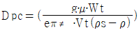
- cyclone내의 제거입자 특성지수
- Cyclone내의 제거입자 평균치
- 사용 Cyclone의 적정 멀티갯수
- Cyclone내에서의 가스의 회전수
(정답률: 알수없음)
49. 한 송풍기가 표준공기 (밀도: 1.2kg/m3)를 10m3/sec로 이동시키고 1000rpm으로 회전할 때 정압이 900N/m2이었다면 공기밀도가 1.0kg/m3으로 변할 때 송풍기의 정압은?
- 520N/m2
- 625N/m2
- 750N/m2
- 820N/m2
(정답률: 알수없음)
50. 중유탈황방법중 기술적, 경제적으로 실현가능하여 현재 가장 많이 사용되고 있는 것은?
- 접촉산화 탈황법
- 접촉수소화 탈황법
- 석회석 탈황법
- 흡착 탈황법
(정답률: 알수없음)
51. 3개의 평행관으로 구성된 전기집진기에서 집진극판 규격은 3.64m×3.64m이고 극판간 거리는 20cm이며, 이 집진기의 포집입자 이동속도가 0.12m/sec일 때 처리가스의 50%가 하나의 평형관에 나머지는 두 평형관에 각각 25%씩 처리될 경우의 효율(%)은? (단, 처리가스유량은 113.2m3/mim, 20℃, 1기압)
- 98.15
- 98.85
- 99.20
- 99.60
(정답률: 알수없음)
52. 악취제거 방법에 관한 다음의 설명 중에서 틀린 것은?
- 희석 방법은 악취를 대량의 공기로 희석시켜 감지되지 않도록 하는 염가의 방법이다.
- 유기성의 냄새 유발 물질을 태워서 산화 시키면 불완전 연소가 있더라도 냄새의 강도를 줄일 수 있다.
- 백금이나 금속 산화물등의 산화 촉매를 이용하여 260-350℃정도의 온도에서 산화 처리 할 수 있다.
- 물리흡착법이 주로 이용된다.
(정답률: 알수없음)
53. 탈취방법중 '수세법'에 관한 설명으로 틀린 것은?
- 알데히드류, 저급유기산류, 페놀등친수성의 극성기를 가지는 성분을 제거할 수 있다.
- 수온변화에 따라 탈취효과가 변동되고 압력손실이 큰 것이 단점이다.
- 조작이 간단하며 처리효율이 우수하여 주로 단독으로 사용된다.
- 분뇨처리장, 계란건조장, 주물공장등의 악취제거에 주로 적용된다.
(정답률: 알수없음)
54. 원심력집진기에 관한 내용으로 알맞지 않은 것은?
- 싸이크론을 병렬 사용하는 경우 먼지에 응집성이 있으면 집진율이 높아진다.
- 일반적으로 축류식 직진형, 접선유입식, 소구경 multiclone에서 blow down 효과를 나타내는 장치를 적용한다.
- 원심력집진기에는 가동부(movingpart)가 없는 것이 기계적 특징이라고 할 수 있다.
- 배기관경(내경)이 작을수록 입경이 작은 더스트를 제거할 수 있다.
(정답률: 알수없음)
55. 상온ㆍ상압의 함진가스 180m3/min을 지름 250mm, 유효길이 2.8m인 원통형 bag filter로 처리한다면 처리가스 속도를 1.8m/min으로 할 때 소요되는 bag의 수는?
- 36개
- 46개
- 56개
- 66개
(정답률: 알수없음)
56. 시운전 중이던 NaOH 용액을 이용한 HCl가스 제거 흡수탑의 HCl 제거효율이 갑자기 떨어졌다. HCl농도는 HCl분석기로 자동연속측정되고 있었다면 제거효율 감소원인을 찾고자 하는 방법과 가장 거리가 먼 것은?
- 흡수탑의 입출구 압력을 측정하여 흡수탑내의 차압 변동값을 정상운전시의 값과 비교해본다.
- HCl 분석기의 오작동 여부를 확인하고 오작동시에는 수동 측정으로 HCl 제거효율을 확인한다.
- 흡수탑으로 투입되는 흡수액 투입양을 확인하고 설계치와 비교해본다.
- 탑내의 충진물을 일부 꺼내어 물질전달 계수를 실험적으로 결정한 후 설계치와 비교해 본다.
(정답률: 알수없음)
57. 충전탑에 사용되는 충전물에 관한 설명으로 틀린 것은?
- 가스와 액체가 전체에 균일하게 분포될 수 있도록 하여야 한다.
- 충전물 간격의 단면적은 기액간의 충분한 접촉을 위해 작은 것이 바람직하다.
- 충전물의 질량은 하단의 충전물이 상단의 충전물에 의해 압력을 받게 되므로 가벼운 것이 좋다.
- 충분한 기계적 강도와 내식성이 요구되며 단위부피내의 표면적이 커야 한다.
(정답률: 알수없음)
58. 가스중에 불화수소를 수산화나트륨 용액과 향류로 접촉시켜 90% 흡수시키는 충전탑의 흡수율을 99.9%로 향상시키려면 충전탑의 높이는? (단, 흡수액상의 불화수소의 평형분압은 0으로 가정함)
- 100배 높아져야 한다.
- 27배 높아져야 한다.
- 9배 높아져야 한다.
- 3배 높아져야 한다.
(정답률: 알수없음)
59. 염소를 함유하는 배출가스에 50kg의 수산화나트륨 수용액을 순환 사용하여 100% 반응시킨다면 몇 kg의 염소가스를 처리할 수 있는가? (단, Cl의 원자량 : 35.5)
- 약 34kg
- 약 44kg
- 약 54kg
- 약 64kg
(정답률: 알수없음)
60. 일반적으로 가스의 처리속도는 1-3m/sec, 액가스비는 0.5-1.5ℓ/m3, 압력손실은 50-150mmH2O정도로 대용량의 가스의 처리가 가능하며 미스트 발생이 적고 구조가 간단하여 수용성 가스처리에 적합한 것은?
- 분무탑
- 벤츄리 스크러버
- 사이크론 스크러버
- 제트스크러버
(정답률: 알수없음)
4과목: 대기오염 공정시험기준(방법)
61. 4-아미노안티피린을 사용하여 발색시킨 후 흡광도를 측정하여 정량되는 화합물은?
- 질소화합물
- 비소화합물
- 페놀화합물
- 납 화합물
(정답률: 알수없음)
62. 단면이 정방형의 굴뚝에서 굴뚝을 등면적으로 4구분으로 나누어 먼지농도를 측정하여 보니 각 구분의 농도는 각각 0.50, 0.48, 0.52, 0.55g/Sm3이며 각 구분의 유속은 각각 4.8, 5.01, 5.2, 4.5m/sec이였다. 이 굴뚝의 평균먼지농도는? (단, 각 구분의 단면적은 1m2이다.)
- 560mg/Sm3
- 540mg/Sm3
- 512mg/Sm3
- 500mg/Sm3
(정답률: 알수없음)
63. 가스크로마토그래프의 설치조건(장소, 전기관계)으로 적합지 않은 것은?
- 분석에 사용하는 유해물질을 안전하게 처리할 수 있는 곳이어야 한다.
- 접지점의 접지 저항은 15-20Ω범위이내여야 한다.
- 전원변동은 지정전압의 10%이내로서 주파수의 변동이 없어야 한다.
- 실온 5-35℃, 상대습도 85% 이하로 직사광선이 쪼이지 않는 곳이어야 한다.
(정답률: 알수없음)
64. 대기시료 채취시 일반적 주의사항이라 볼 수 없는 것은?
- 시료채취시 되도록 측정하려는 가스 또는 입자의 손실이 없도록 한다.
- 악취물질의 채취는 가능한한 장시간 채취하고 입자상 물질 중의 금속성분이나 발암성물질은 되도록 짧은 시간내에 끝내야 한다.
- 미리 측정하려고 하는 성분과 이외의 성분에 대한 물리적, 화학적성질을 조사하여 방해성분의 영향이 적은 방법을 선택한다.
- 환경기준이 설정되어 있는 물질의 채취시간은 원칙적으로 법에 정해져 있는 시간을 기준으로 한다.
(정답률: 알수없음)
65. 흡광광도 분석법에는 일반적으로 램버어트-비어(Lambert-beer)의 법칙을 이용한다. 이 법칙을 적용할 경우 다음 중 올바른 관계식은? (단, l0 : 입사광의 강도, C : 농도, ε : 흡광계수, lt : 투과광의 강도, ℓ : 빛의 투과거리)
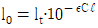
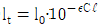
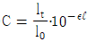
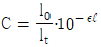
(정답률: 알수없음)
66. 배출가스시료를 채취하여 질산은 적정법으로 시안화수소을 측정하기 위하여 다음과 같은 측정치를 얻었다. 시안화수소의 농도는? (대기압:760mmHg, 시료가스온도:10℃, 건조시료가스량:48ℓ, 시험용액의 전량:250㎖, 적정에 사용한 시험용액:250㎖, 적정에 소비된 N/100 AgNO3량:4.0㎖, 공시험에 소비된 N/100 AgNO3량:0.1㎖, N/100 AgNO3역가:1.000, N/100 AgNO3 1㎖=0.448㎖HCN)
- 약 36ppm
- 약 27ppm
- 약 12ppm
- 약 8ppm
(정답률: 알수없음)
67. 환경대기중 아황산가스를 측정하기 위한 불꽃 광 도법(FPD)에 관한 설명으로 맞지 않는 것은?
- 황화합물의 농도가 아황산가스 농도의 5% 이상일 때는 적당한 전처리를 하여 방해물질을 제거한다.
- 측정범위는 0.0⑤-1.0ppm이다.
- 황화합물이 열분해할 때 근적외선 영역에 강한 발광현상을 일으키는 것을 이용한다.
- 모든 황화합물에 대하여 반응한다.
(정답률: 10%)
68. 유황분 1.6% 이하 함유한 액체연료를 사용하는 연소시설에서 배출되는 황산화물(표준산소농도를 적용받는 항목)을 측정한 결과 700ppm이었다. 배출가스 중의 산소농도는 7%, 표준산소 농도는 4%이다. 시험성적서에 명시해야할 황산화물의 농도(ppm)는?
- 750ppm
- 800ppm
- 850ppm
- 900ppm
(정답률: 알수없음)
69. 오르자트 가스 분석계로 산소를 측정할 때 사용되는 산소 흡수액은?
- 황산 + 수산화칼륨용액 + 피리딘용액
- 물 + KOH + 피로가롤용액
- 오르토톨리딘용액 + 아지드나트륨용액 + 메칠레드
- 황산 묽은용액 + 아연아민용액
(정답률: 50%)
70. 기체 중의 농도를 mg/m3로 표시했을 때 m3가 의미하는 것으로 옳은 것은?
- 실측상태의 온도, 압력하에서의 1m3 기체용적
- 표준상태의 온도, 압력하에서의 1m3 기체용적
- 상온상태의 온도, 압력하에서의 1m3기체용적
- 절대온도, 절대압력하에서의 1m3 기체용적
(정답률: 알수없음)
71. 질소산화물 측정방법 중 페놀디술폰산법에서의 농도 계산식으로 알맞은 것은? [단, C=질소 산화물의 농도(V/V ppm), Vs=시료가스 채취량(㎖)(표준상태), n=분석용 시험용액의 희석배수, v=검량선으로부터 구한 질소산화물(㎖)]
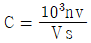
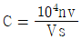
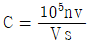
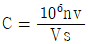
(정답률: 알수없음)
72. 부유 먼지 측정기의 설치가 가능한 위치를 표현한 그림에서 설치가 가능한 영역을 가장 잘 표현한 그림은? (단, X축은 도로변으로부터의 거리(m)을 나타내며, 빗금친 부분은 설치가능영역)
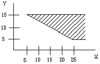
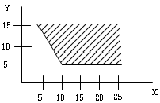
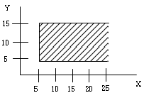
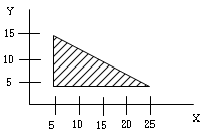
(정답률: 알수없음)
73. 황화수소를 요오드 적정법으로 정량할때 종말점의 판단을 위한 지시약은?
- 녹말 용액
- 메틸렌 레드
- 아르세나조
- 메틸렌 블루
(정답률: 알수없음)
74. A 도시면적이 150Km2이고 인구밀도가 4000명/Km2이며 전국 평균 인구밀도가 800명/Km2일 때 A도시에 환경기준 시험을 위한 시료채취 측정점수(채취지점수)를 인구비례에 의한 방법으로 구하면? [단, A도시면적은 지역의 가주지(可住地)면적(총면적에서 전답, 호수, 임야, 하천 등의 면적을 뺀 면적)]
- 30개
- 25개
- 20개
- 15개
(정답률: 59%)
75. 중화적정법으로 황산화물을 정량할 때 적정액으로 사용하는 N/10-NaOH 용액의 역가를 구하기 위한 표정에 사용하는 용액은?
- 황산용액
- 술파민산용액
- 붕산용액
- 초산바륨용액
(정답률: 알수없음)
76. 굴뚝에서 배출되는 가스중 벤젠을 분석하고자 할 때 채취관이나 도관의 재질로 알맞지 않는 것은?
- 경질유리
- 석영
- 불소수지
- 보통강철
(정답률: 알수없음)
77. 원자흡광광도법에 사용되는 용어의 정의로 알맞지 않는 것은?
- 역화: 불꽃의 연소속도가 크고 혼합기체의 분출속도가 작을 때 연소현상이 내부로 옮겨지는 것
- 충전가스: 중공음극램프에 채우는 가스
- 선프로파일: 스펙트럼선의 파장을 나타내는 직선
- 다연료불꽃: 가연성가스/조연성가스의 값을 크게 한 불꽃
(정답률: 30%)
78. 피토우관으로 연도 배출가스의 유속을 측정한 결과 동압(動壓)이 10mmH2O였다. 이때 유속은? (단, r=1.3(g/m3), 피토우관 계수는 1.0이다.)
- 10.5m/sec
- 12.3m/sec
- 16.2m/sec
- 18.9m/sec
(정답률: 알수없음)
79. 카드뮴화합물을 채취한 시료는 그의 성상에 따라 아래와 같은 처리방법에 의하여 처리한 후 분석시료 용액을 조제한다. 이중 처리방법이 틀린 것은?
- 타르 기타소량의 유기물을 함유하는것→질산-연화불소법
- 유기물을 함유하지 않는 것→질산법
- 다량의 유기물 유리탄소를 함유하는 것→저온회화법
- 셀룰로오스섬유제 여과제를 사용한 것→저온회화법
(정답률: 알수없음)
80. 환경대기중 아황산가스를 파라로자닐린법으로 분석할 때 방해물질에 대한 설명으로 맞는 것은?
- NOx : 측정기간을 늦춘다.
- Mn, Fe, Cr : EDTA를 사용하여 방해를 방지한다.
- O3 : 슬퍼민산을 사용하여 제거한다.
- 탄산가스 : pH를 4.5이하로 조절한다.
(정답률: 알수없음)
5과목: 대기환경관계법규
81. 대기오염 방지시설에 포함되는 부대 기계, 기구류가 아닌 것은?
- 오염물질을 이송하기 위한 송풍기
- 연소효율을 높이기 위한 연소보조장치
- 오염물질 포집을 위한 후드장치
- 오염물질이 통과하는 관로
(정답률: 알수없음)
82. 공기희석관능법으로 악취측정시 배출허용기준인 희석배율은? (단, 부지경계선 기준, 공업지역외 기타지역의 사업장)
- 10이하
- 15이하
- 20이하
- 25이하
(정답률: 알수없음)
83. 대기 배출부과금의 부과대상 오염물질로 만 짝지어진 것은?
- 악취, 디옥신, 황화수소
- 악취, 먼지, 이산화탄소
- 일산화탄소, 염소, 시안화수소
- 염화수소, 이황화탄소, 염소
(정답률: 54%)
84. 다음 중 시도지사가 설치하는 대기오염측정망에 해당되는 것은?
- 유해대기물질측정망
- 산성강하물측정망
- 지역배경농도측정망
- 대기중금속측정망
(정답률: 알수없음)
85. 환경관리인을 임명하지 아니하거나 임명에 대한 신고를 하지 아니한 자에 관한 벌칙기준은?
- 50만원이하의 과태료에 처한다.
- 100만원이하의 과태료에 처한다.
- 100만원이하의 벌금에 처한다.
- 200만원이하의 벌금에 처한다.
(정답률: 알수없음)
86. 사업장의 배출구별별 규모가 고체환산 연료사용량으로 연간 2100톤인 경우 자가측정횟수기준은?
- 주 1회이상
- 매 2월 1회이상
- 월 2회이상
- 매반기 1회이상
(정답률: 알수없음)
87. 특정유해물질 배출시설을 증설하고자 하는 경우 배출시설 변경허가를 받아야 하는 시설의 규모는?
- 100분의 50
- 100분의 40
- 100분의 30
- 100분의 20
(정답률: 알수없음)
88. 사업장에서 배출하는 비산먼지의 배출허용 기준은?
- 0.1mg/Sm3이하
- 0.5mg/Sm3이하
- 1.0mg/Sm3이하
- 5.0mg/Sm3이하
(정답률: 알수없음)
89. 자가측정 항목이 아닌 것은?
- 황산화물
- 매연
- 아연화합물
- 비산먼지
(정답률: 알수없음)
90. 사업장별 환경관리인 자격기준으로 알맞지 않은 것은?
- 2,3종 사업장 중 특정대기 유해물질이 포함된 오염물질을 배출하는 경우에는 1종 사업장에 해당하는 관리인을 두어야 한다.
- 대기오염물질 배출시설중 일반 보일러만 설치한 사업장은 5종 사업장에 해당하는 관리인을 둘 수 있다.
- 대기 1종 내지 3종 사업장의 대기환경관리인이 수질환경보전법에 의한 수질환경관리인의 자격을 갖춘 경우에는 수질 1종 내지 3종 사업장의 수질환경관리인을 겸임할 수 있다.
- 1종 및 2종 사업장 중 1개월간 실제 작업한 날만을 계산하여 1일 평균 17시간 이상 작업한 경우에는 해당 사업장의 관리인을 각 2인 이상 두어야 한다.
(정답률: 55%)
91. 배출부과금 부과시 고려사항으로 가장 거리가 먼 것은?
- 배출허용기준 초과여부
- 오염물질 배출기간
- 배출되는 오염물질의 종류
- 오염물질의 농도
(정답률: 알수없음)
92. 대기환경보전법상 총량규제에 대한 설명이다. 옳지 않은 것은?
- 특별대책지역중 사업장이 밀집되어 있는 지역에서 실시한다.
- 대기오염이 환경기준을 초과하여 주민의 건강, 재산에 위해를 가져올 우려가 있는 지역에서 실시한다.
- 일정지역에 적정규모 이상의 공단이 조성된 지역에서 실시한다.
- 총량규제의 항목, 방법 기타 필요한 사항은 환경부령으로 정한다.
(정답률: 알수없음)
93. 환경관리인이 교육받을 기관으로 적절한 곳은?
- 환경보전협회
- 환경관리인협회
- 환경관리공단
- 환경공무원교육원
(정답률: 알수없음)
94. 다음 중 생활 악취시설에 대한 내용으로 알맞지 않는 것은?
- 수질환경보전법에 의한 폐수배출시설, 수질오염방지시설 및 폐수종말처리시설
- 축산물 가공처리법에 의한 도축업의 시설
- 비료관리법에 의한 부산물비료 생산 시설
- 공중위생관리법에 의한 공중위생 시설
(정답률: 알수없음)
95. 석탄사용시설이외의 기타 고체연료 사용시설의 설치기준으로 적합지 않는 것은?
- 배출시설의 굴뚝높이는 20m 이상이어야 한다.
- 연료 및 그 연소재의 수송은 덮개가 있는 차량을 이용하여야 한다.
- 연료는 옥내에 저장하여야 한다.
- 굴뚝에서 배출되는 먼지를 측정할수 있는 기기를 설치하여야 한다.
(정답률: 알수없음)
96. 무공해 저공해자동차의 운행에 관한 설명중 틀린 것은? (단, 대기환경규제지역안에서 운행하는 자동차기준)
- 시도지사는 경유를 연료로 사용하는 자동차의 소유주에 대해 당해 자동차를 환경부장관이 정하는 무공해 저공해차로 전환하도록 권고할 수 있다.
- 시도지사는 경유를 연료로 사용하는 자동차의 소유주에 대해 당해 자동차를 환경부장관이 정하는 배출 가스저감장치를 부착하도록 권고할 수 있다.
- 시도지사는 대중교통용 시내버스에 대하여는 천연가스를 연료로 사용하는 자동차로 우선하여 전환하도록 권고할 수 있다.
- 시도지사가 정하는 무공해 저공해 자동차중 환경부령이 정하는 대중교통용 자동차를 구입하고자 하는 자는 국가 또는 지자체로부터 필요한 자금을 융자받을 수 있다.
(정답률: 30%)
97. 개선명령을 받은 경우로 개선하여야 할 사항이 배출시설 또는 방지시설인 경우 개선계획서에 포함되어야 하는 사항이 아닌 것은?
- 배출시설 또는 방지시설의 개선명세서 및 설계도
- 오염물질 등의 처리방식 및 처리효율
- 배출허용기준 초과사유 및 대책
- 공사기간 및 공사비
(정답률: 알수없음)
98. 개선명령이행 확인을 위한 오염도를 검사하는 기관이 아닌 것은?
- 지방환경관리청
- 시,도보건환경연구원
- 환경관리공단
- 환경보전협회
(정답률: 알수없음)
99. 조업정지명령을 받은 자가 조업정지일 이후에 조업을 계속한 경우, 1차 행정처분기준은?
- 경고
- 폐쇄
- 사용금지
- 허가취소
(정답률: 알수없음)
100. 환경기준항목과 측정방법이 알맞게 짝지어진 것은?
- 아황산가스:원자흡광광도법
- 일산화탄소:비분산적외선분석법
- 이산화질소:베타선 흡수법
- 총먼지:자외선광도법
(정답률: 17%)